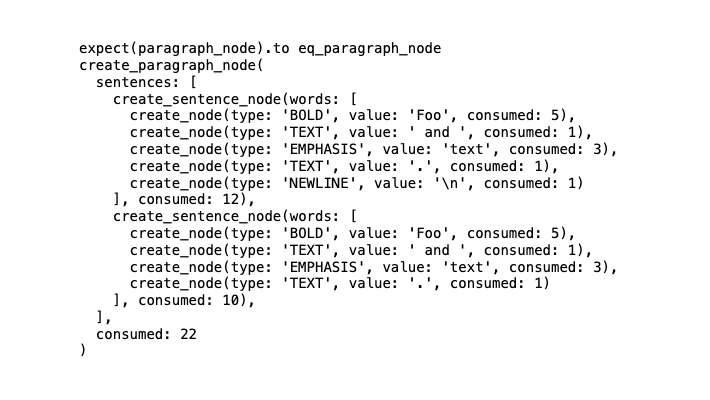

<프로그래밍 루비>에선 덕 타이핑을 써서 테스트하는 방법을 알려준다. 처음 알게 된 방법이라 흥미가 생겼고, 나도 테스트할 때 덕 타이핑을 써보고 싶었다.
적용할만한 곳을 찾다가 직접 만든 마크다운 파서(이하 파서)의 테스트 코드에 덕 타이핑을 써서 테스트를 개선해보기로 했다. 파서는 이 블로그를 빌드할 때 쓰려고 만들었는데, 새로 블로그 글을 써서 html로 변환할 때마다 고칠 부분이 보였다. 그럴 때마다 테스트 케이스를 추가해가면서 고쳤는데, 테스트 하나를 추가하는 과정이 다소 오래 걸린다고 느껴졌다.
왜 테스트를 추가하는 게 오래 걸렸을까? 써야 하는 코드가 많았기 때문이다. 파서에서 마크다운 문자열을 파싱한 결과가 예상되는 결과와 같은지 확인하기 위해선 여러 객체를 조합해 예상되는 node 객체들의 조합을 만들어야 하는데, 여기에 필요한 코드가 많았다.
간단한 node 객체 하나를 만드는 건 간단했다.
하지만 이런 node만 가지고는 그다지 의미가 없었다. 되도록 실제로 쓰는 것과 유사한 테스트 데이터를 갖고 테스트해봐야 실제 파싱 과정에서 생길만한 문제를 미리 파악하고 고칠 수 있었다. 그런 데이터에는 리스트나 단락 같은 요소를 나타내는 node 객체가 있었다. 리스트는 여러 항목으로 이뤄지고, 단락 하나는 여러 문장으로 이뤄진 것처럼, 이런 객체는 그 안에 더 하위의 node 객체 여러 개를 갖는다.
이런 node 객체의 조합을 만들기 위해서 1) 긴 모듈명을 쓰지 않기 위해 해당 node 객체를 생성해주는 팩토리 메서드를 새로 정의하고, 2) 새로 정의한 node 타입일 경우 두 node 타입 값을 비교하는 matcher 메서드를 새로 정의하고, 3) 테스트 입력 마크다운 문자열에 맞춰 예상 node 객체 조합을 만들어야 했다. 이런 걸 만들 때 들어가는 공수가 꽤나 컸다.
특히 중첩된 구조의 node 객체를 만들어야 하는 경우, 객체 생성 코드도 길어졌다. "__Foo__ and *text*.(newline)**Foo** and *text*." 라는, 두 문장을 갖는 단락을 나타내는 마크다운 문자열을 파싱해서 얻은 node 객체는 이렇다. 문자열이 그렇게 긴 것도 아닌데 코드가 길다.

이런 반복적인 코드를 줄이기 위해, 배열을 node 객체의 덕 타입으로 써서 테스트에서 쓸 수 있도록 바꿨다. 파서 내에서 정의하는 각 node 타입 객체는 항상 세 가지 속성을 갖고 있다. 그래서 해당 객체의 각 속성을 요소로 갖는 배열을 만들어서, 이 배열을 node 타입 객체의 덕 타입으로 썼다.
덕타입으로 테스트 데이터를 바꾼 다음에는 예상 결과 데이터를 만드는 것이 간단해졌다. 상황에 따라 node를 아주 많이 정의해야 하는 경우도 있었는데, 그렇더라도 전에 비해 덜 번거롭게 데이터를 만들 수 있게 되었다. 데이터가 배열이기 때문에, 파싱 결과 중 일부만 확인해야 하거나, 파싱 결과 순서를 바꾸는 등의 작업은 언어에서 제공하는 배열 조작 메서드를 써서 처리할 수 있었다. 어려운 작업도 생겼다. 파싱 결과가 중첩 배열 형태인 경우, 예상 결과가 중첩 배열 형태가 되는 경우 연산 결과를 처리하는 것이 까다로웠다. 위에서 보여준 결과값을 얻으려면, 다음과 같은 배열 조작 코드를 써줘야 했다.
덕타입으로 테스트를 변경한 후 몇 개월이 지났다. 그동안 짧게는 며칠, 길게는 몇주마다 코드를 다시 보게 되었는데, 그때마다 새로운 테스트를 추가하는 것이 편해졌다. 테스트 추가하는 것이 너무 번거롭게 느껴진다면, 덕 타이핑을 한 번 활용해보는 것을 추천한다.